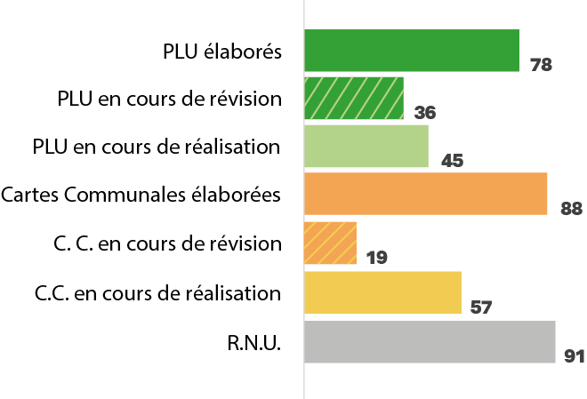

État des documents d’urbanisme en 2025
Cette cartographie présente la situation réglementaire des communes concernées : PLU approuvés ou en élaboration, cartes communales et communes soumises au RNU. Elle permet de visualiser le niveau de planification territoriale à l’échelle communale.

L’analyse quantitative met en évidence une certaine dynamique de planification territoriale. 78 Plans Locaux d’Urbanisme ont été élaborés, dont 36 actuellement en révision, tandis que 45 communes sont engagées dans l’élaboration d’un PLU.
Les cartes communales demeurent un outil largement mobilisé : 88 ont été approuvées, dont 19 en révision et 57 en cours de réalisation. Cette situation traduit une volonté progressive d’encadrement réglementaire du développement local.
Toutefois, 91 communes restent soumises au Règlement National d’Urbanisme (RNU), révélant un contraste territorial marqué entre secteurs structurés par des documents de planification et territoires encore dépourvus d’outil stratégique local.